Server Side Scripting in 
Lesson 5
http://cmda.github.io/sss-course/lesson5
Today
- The big picture
- Databases
- Basic SQL
- MySQL + Node.js
- Wrap up
The big picture

Databases
Why?
- Persist data
- Make data queryable
- Relate data
- Constrain data
MySQL
- It's free
- It's fast
- It's easy to set up
- It's most commonly used
Basic SQL
Tables ↦ Records
Relationships
SQL
Structured Query Language
Getting records from a table
SELECT fieldname,fieldname FROM table;
SELECT * FROM table;
Getting some records from a table
SELECT fieldname1,fieldname2 FROM table
WHERE fieldname1 = 'value1' OR fieldname1 = 'value2';
Joining records from multiple tables
SELECT table1.fieldname,table2.fieldname FROM table1
JOIN table2 ON table1.id = table2.id
Left joining records from multiple tables
SELECT table1.fieldname,table2.fieldname FROM table1
LEFT JOIN table2 ON table1.id = table2.table_id
Adding new records
INSERT INTO table (fieldname1, fieldname2) VALUES (value1, value2);
Changing existing records
UPDATE table SET fieldname1=value1, fieldname2=value=2 WHERE fieldname3=value3;
MySQL + Node.js
Getting started
$ npm install --save mysql-
Using it
var mysql = require('mysql'); // Setup connection var connection = mysql.createConnection({ host : 'localhost', user : 'root', password : '' }); // Select database to use connection.query('USE sss'); - Profit!
What we learned today
Live code
Werkcollege en huiswerk
Installeer MySQL + MySQL Workbench
- Werk met z'n tweeen, vindt iemand die het vak Storage doet.
- Werk met iemand met 't zelfde system (Mac/Windows)
- Zorg er voor dat je MySQL + MySQL Workbench geïnstalleerd hebt
Huiswerk: lezen
- Express.js Middleware Demystified https://blog.safaribooksonline.com/2014/03/10/express-js-middleware-demystified/
Klaar voor werkcollege
Huiswerk: doen
Opdracht van voorgaande weken:
- https://github.com/CMDA/sss-exercises/tree/master/exercise2
- https://github.com/CMDA/sss-exercises/tree/master/exercise3
Klaar voor werkcollege